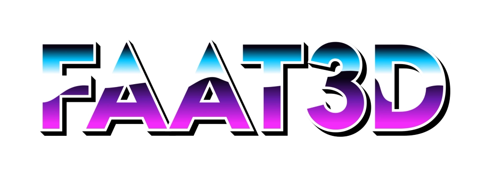
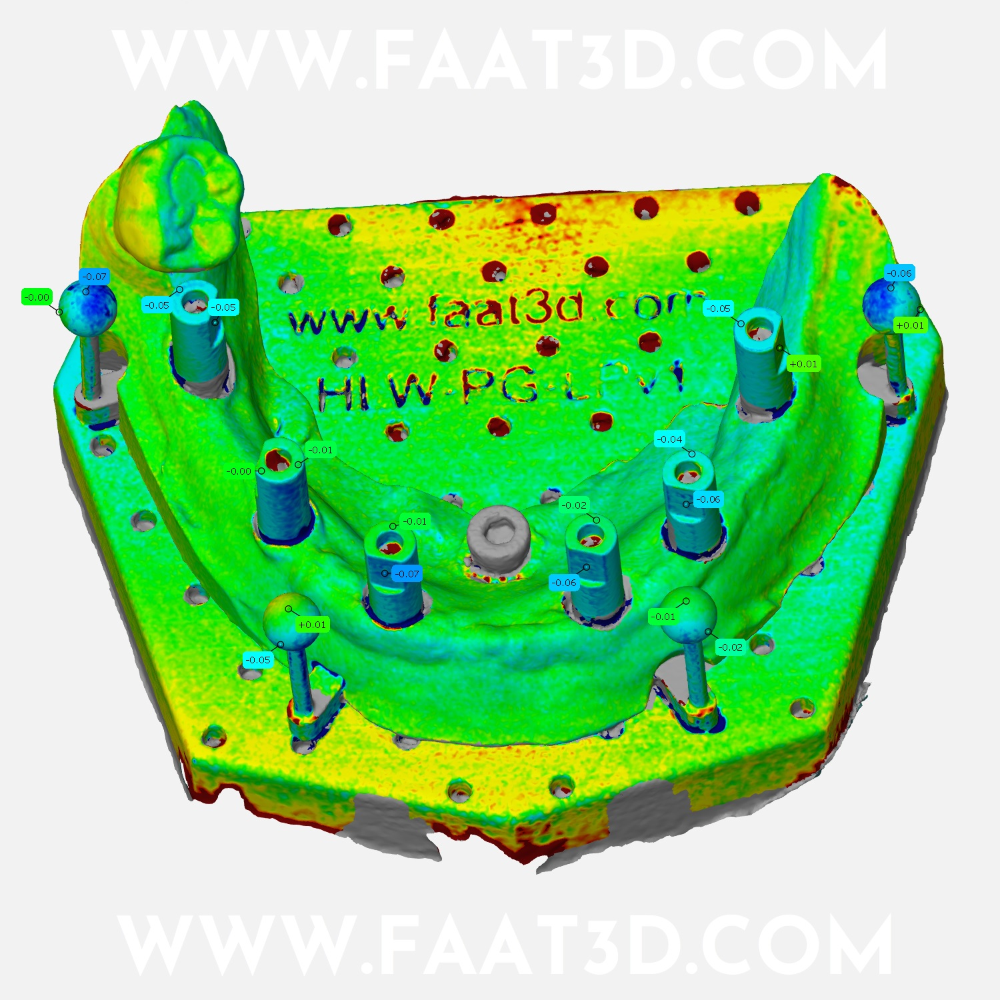
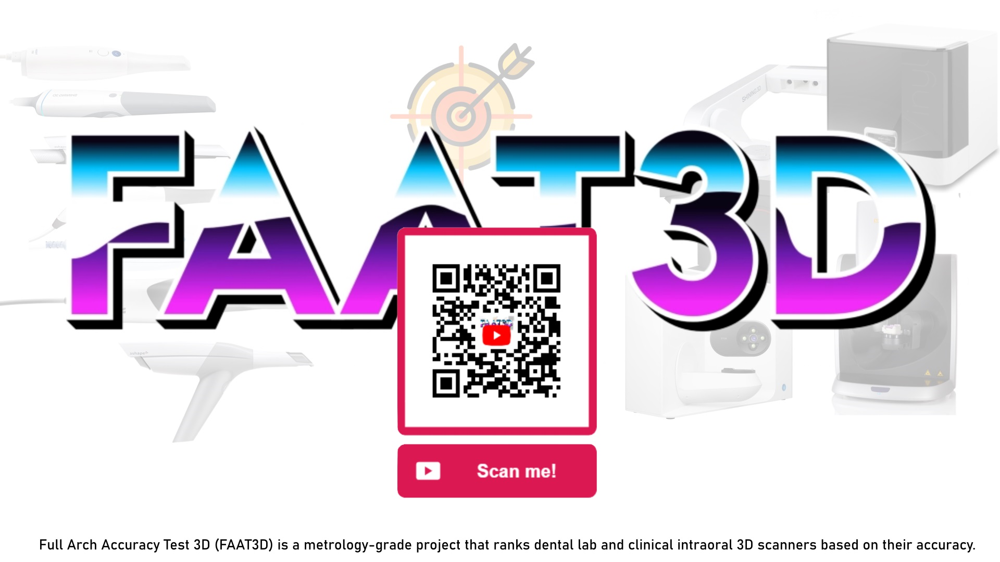
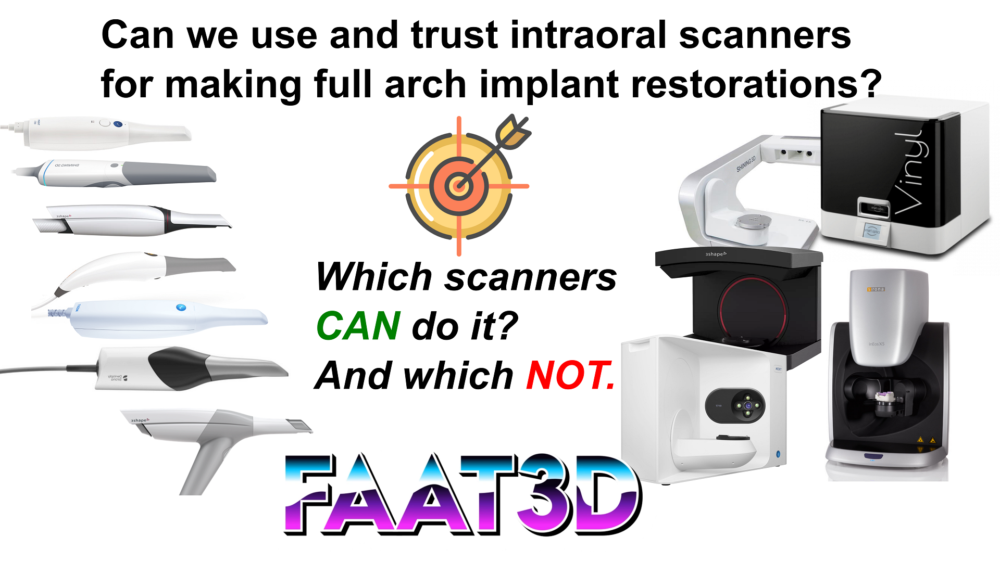
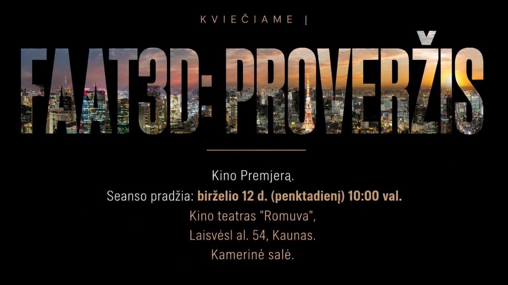
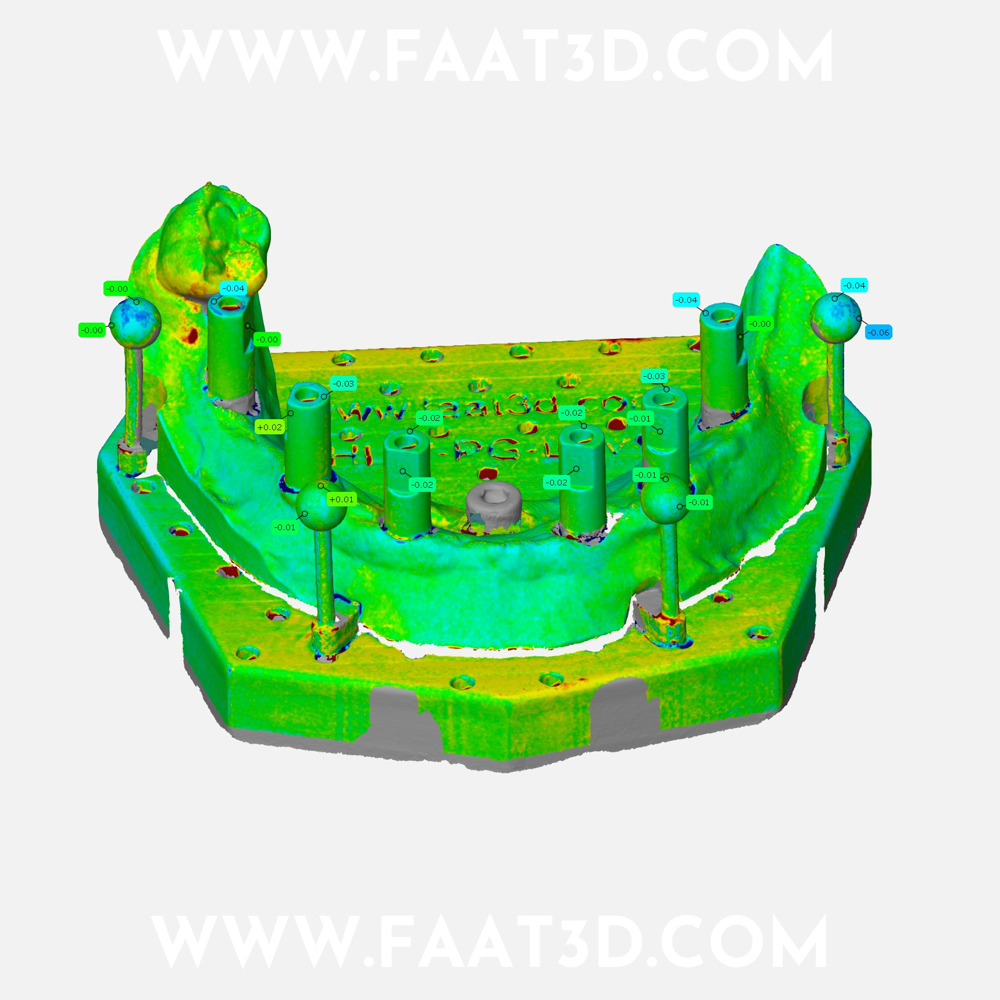

FAAT3D Official Links
FAAT3D (Full Arch Accuracy Test 3D) is a metrology-grade research project evaluating and ranking the accuracy of dental laboratory and clinical intraoral 3D scanners.


Popular Video

Events
12th of June 2026 - Movie premiere
In Lithuanian language / Lietuvių kalba 🇱🇹

„FAAT3D: PROVERŽIS“ – Premjera birželio 12 d. (penktadienį) 10:00 val. 🇱🇹
Kino teatras "Romuva" , Laisvės al. 54, Kaunas. Kamerinė salė.
„FAAT3D: THE LEAP“ – Official Premiere (in Lithuanian).
FAAT3D – „Full Arch Accuracy Test 3D“ – tai nepriklausomas skaitmeninės odontologijos projektas, skirtas pilno lanko (full-arch) 3D skenavimo, fotogrametrijos ir CAD/CAM darbo sekų tikslumo analizei bei palyginimui. Projektas orientuotas į realių klinikinių ir laboratorinių sistemų testavimą, metrologiją ir technologijų vertinimą be rinkodarinio pagražinimo.
CDT Mantas Auškelis, Lithuania – „režisierius“.
„FAAT3D: PROVERŽIS“ – tai kinematografinė dokumentinė interaktyvi paskaita apie skaitmeninės odontologijos virsmą.
Filmas nagrinėja intraoralinių ir laboratorinių skenerių tobulėjimą bei jų reikšmės augimą šiuolaikinėje odontologijoje. Čia susiduria technologinis progresas, abejonės, rinkodara ir realus klinikinis pritaikymas.
Per dokumentinę ir lyrinę vizualinę kalbą žiūrovas kviečiamas į kelionę per dilemų kupiną dešimtmetį – nuo hibridinių darbo sekų iki pilnai skaitmeninio modelio ir fotogrametrijos, vertinant visa tai per metrologijos mokslo prizmę, su retrospektyva į jau įgyvendintus darbus bei atsargiomis futurologinėmis įžvalgomis.
Kaip dažnai nutinka moksle, atsakymai neretai pasirodo kitokie, nei tikėjomės, o kartais jais tikėti tampa nepatogu, nes jie nėra tai, ko norėjome. Tikėjimas ir žinojimas, deja, ne visada sutampa.
Tai istorija apie momentą, kai technologijų viršūnė lyg jau matoma rūke, tačiau išsklaidžius mitus ir pasakas paaiškėja, kad ji vis dar nepasiekiama ranka.
FAAT3D kelia klausimą, ar šiandien matome tikrą proveržį, ar tik dar vieną iliuziją prieš naują šuolį.
Tai audiovizualinė kelionė žmonėms, kurie nenori būti aklai nuvesti prie paruoštų atsakymų, bet siekia patys praskleisti nežinios rūką, suprasti galimybes, jų kainą, riziką ir kryptį.
Bilietus į renginį įsigykite iki birželio 12 d. per Paysera Tickets.
Bilietai renginio dieną – tik kortele ir žymiai brangesni. Laisvos vietos negarantuotos!
